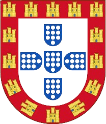

Bem-vindo ao mundo das Feiras Medievais
As feiras medievais são uma forma única de reviver o passado e celebrar as tradições que marcaram a história. De norte a sul de Portugal, vilas e cidades transformam-se em verdadeiros palcos históricos, cheios de cor, vida e autenticidade.
Neste site poderás conhecer as origens destas feiras, descobrir as atividades mais populares e explorar imagens que captam a essência de um tempo onde cavaleiros, mercadores e artesãos faziam parte do quotidiano.
Viaja connosco até à Idade Média — um mundo de cultura, festa e descoberta.